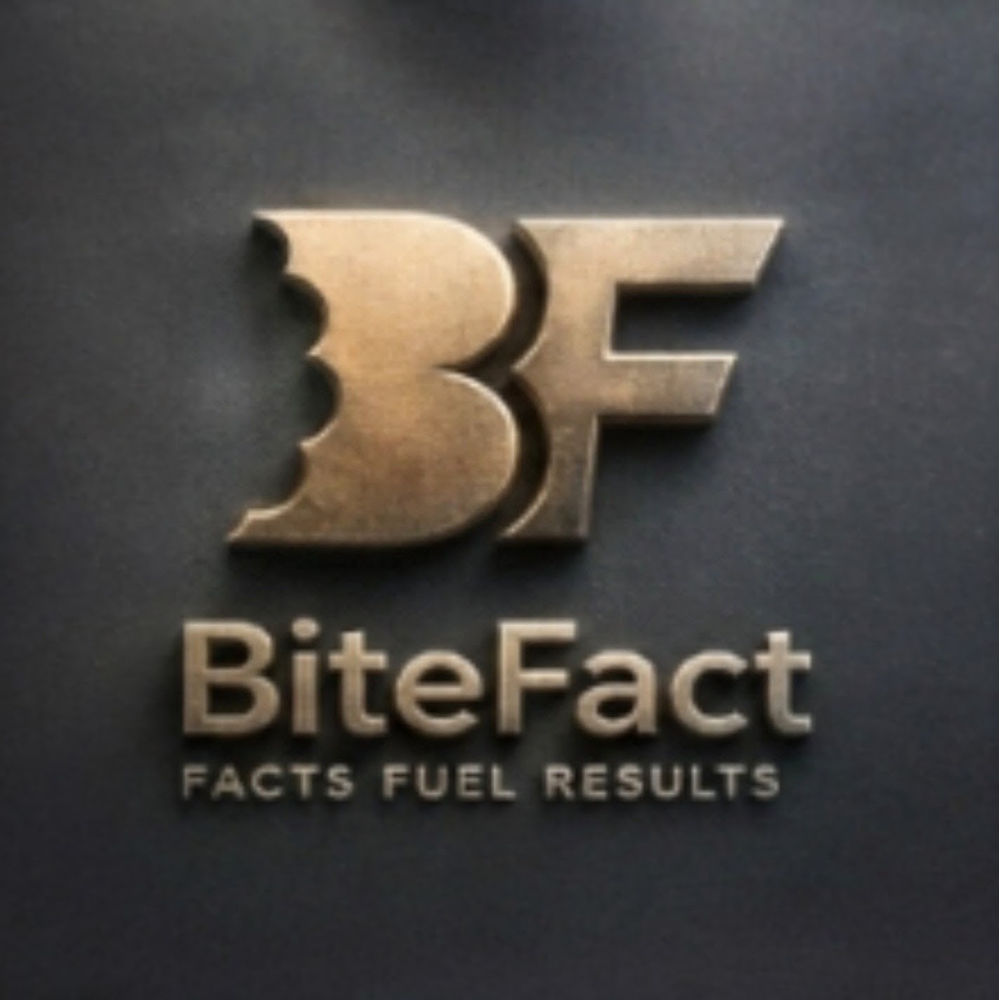
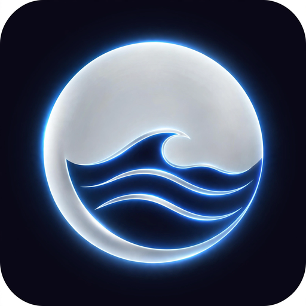

BUILD WHAT'S NEXT.
DON'T GET LEFT BEHIND.
Toastid Tech designs, builds, and ships AI-powered tools for real people, from habit-building apps to business consulting. Products that actually work.
Founder-Built
Every product is designed, coded, and shipped by an operator who's lived the problems he's solving.
AI-Native
Built with AI at the core from day one, not bolted on as an afterthought.
Ship Fast
From idea to live app in weeks, not quarters. Momentum is the product strategy.
Built to Use
Tools people actually open again, priced to be honest and accessible.
An IT operator turned AI builder.
Toastid Tech, LLC was founded in 2026 by Sean Sziklas Sr., after a 20+ year career managing operations at organizations like USGS and DIRECTV. That background shapes how every product gets built: direct, practical, and focused on solving the actual problem in front of the user.
Learn More About Us →PWA Development
Lightweight, install-anywhere apps, no app store, no bloat, just the tool doing its job.
AI Consulting
Personal consultations and full business audits for owners who want to put AI to work without the hype.
Straight Answers
No agency-speak. You get a direct read on what's worth building and what isn't.
Smart Apps. Real Results.
Cope
A daily emotional wellness companion with grounding tools, affirmations, and a 5-minute reset guide.
Launch App →28-Day Walking Tai Chi
Build balance, calm, and strength with a guided daily walking practice, one mindful step at a time.
Launch App →Micro Habits
Break big goals into 5-minute rituals. Momentum you can actually keep up with.
Launch App →CanvasFlow
A graphic design PWA for creators who need clean exports fast, no subscription trap required.
Launch App →
BiteFact
AI-powered meal photo analysis and nutrition tracking, with user verification before meals are logged.
Launch App →SOPilot
An AI-powered SOP builder that turns how you already work into documentation your team can follow.
Launch App →Pulse Matrix
Six AI marketing tools in one command hub. Bring your own Anthropic API key — founding members price: $9.99 one-time, yours forever.
Launch App →
AuraTide
Your AI-powered daily horoscope and manifestation companion. Personalized readings, unlimited oracle rolls, compatibility insights, and tomorrow previews — $9.99/mo or $59.99/yr.
Launch App →The AuraTide Commercial
The universe is always speaking.
Thirty seconds under the Milky Way, the tides, and the zodiac — AuraTide turns your birth profile into a daily ritual of readings, oracle rolls, and manifestations written for the life you are manifesting.
Start your free journey →The SOPilot Commercial
Chaos in. SOPs out.
Twenty seconds from scattered sticky notes to a clean, AI-built standard operating procedure — SOPilot turns how you already work into documentation your team can actually follow.
Build your first SOP →The PulseMatrix Commercial
Marketing should not feel like homework.
Twenty-five seconds from blank-page panic to viral liftoff — PulseMatrix packs six AI marketing tools into one command hub: ad scripts, scroll-stopping hooks, visuals, content calendars, and competitor counter-punches. $9.99 one-time, yours forever.
Stop guessing. Start publishing →HELP BUILD WHAT'S NEXT.
See what we're building, why we're building it, and where your support goes.
Straight Answers.
What is Toastid Tech?
Toastid Tech, LLC is an AI consulting and progressive web app (PWA) development company founded in 2026 by Sean Sziklas Sr., a 20+ year IT operations veteran (USGS, DIRECTV) based in Van Buren, Arkansas. We build AI-powered apps and provide AI consulting, business audits, and automation for small businesses and solopreneurs.
What apps has Toastid Tech built?
Cope (emotional wellness companion, $12.99/mo standalone or $19.99/mo with AI chat), BiteFact (AI meal-photo nutrition tracking, free / Plus $12.99/mo / AI $19.99/mo), SOPilot, also known as ToastidReady (AI SOP builder, $9.99/mo), Micro Habits ($24.99 one-time), CanvasFlow, 28-Day Walking Tai Chi, Pulse Matrix, and AuraTide (AI-powered daily horoscope and manifestation companion, $9.99/mo or $59.99/yr).
What is AuraTide?
AuraTide is our AI-powered daily horoscope and manifestation companion — personalized readings, unlimited oracle rolls, compatibility insights, and tomorrow previews tailored to your birth profile. $9.99/month or $59.99/year at auratide.toastidtech.com.
Do I need an app store to install Toastid Tech apps?
No. Our apps are progressive web apps — open the app link in your browser and install it to your home screen on iPhone or Android. No app store, no bloat.
What does AI consulting from Toastid Tech include?
Practical one-on-one consultation ($250 for a 1-hour session) and full business audits ($1,995) that identify where AI can create real leverage in your workflows — automations, custom apps, or tool choices — with a concrete plan and measurable outcomes. No hype, no sales pitch.
Who runs Toastid Tech?
Sean Sziklas Sr., founder and solo operator, with 20+ years of IT operations experience at organizations including USGS and DIRECTV. Meet the team →
Ready to build what's next?
Let's talk about your project, no pressure, just a straight answer.